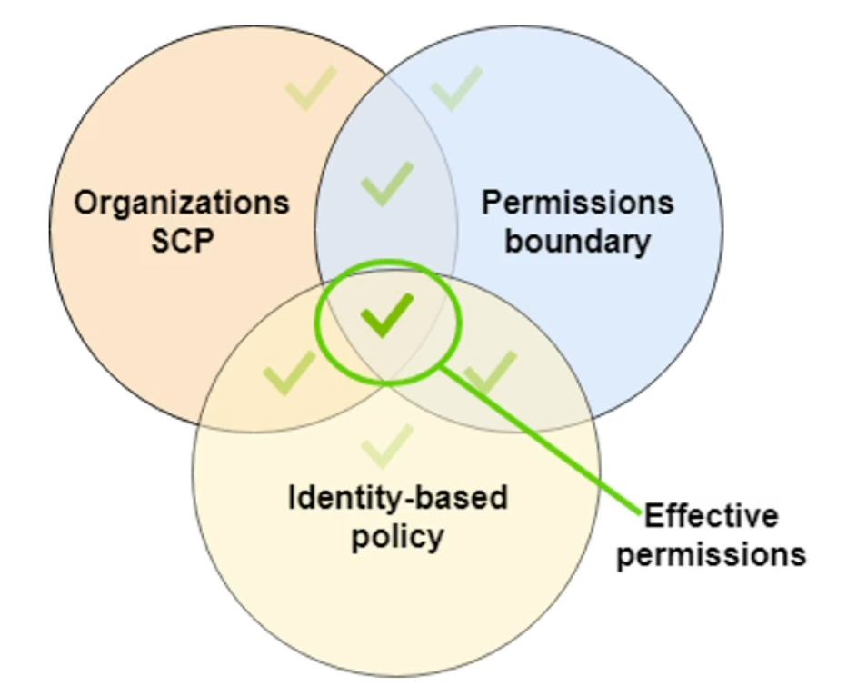
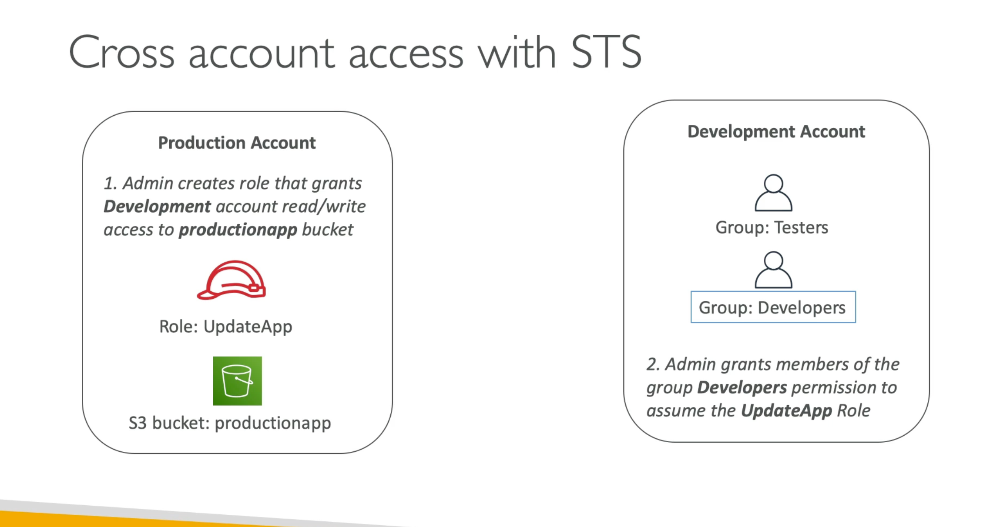
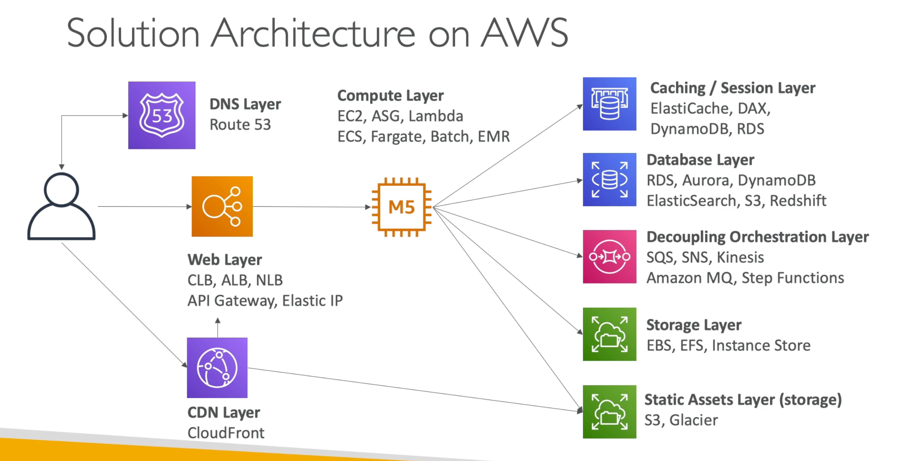
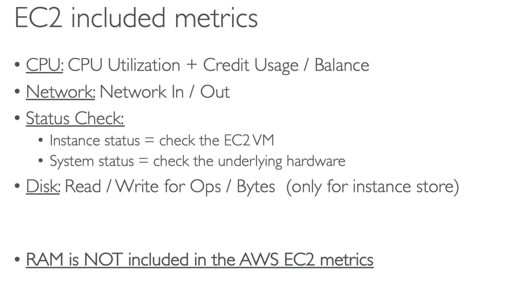

这是一份认证备考速查笔记，按服务域和考试易错点组织；AWS 服务能力和考试范围会变化，正式备考应以 AWS 最新官方文档和考试指南为准。
Identity
| AWS 服务 | 用途 |
|---|---|
| IAM | 无法跨账户 assume role |
| IAM Service Role | 将权限授予 AWS 服务，从而代为执行操作 |
| STS（Security Token Service） | 创建临时的、有限权限的凭证 |
| SAML（Security Assertion Markup Language） | 在身份提供商（IdP）和服务提供商（SP）之间交换认证和授权数据；通常用于实现单点登录（SSO） |
| Cognito | 身份与访问管理： · identity pool：向 AWS 授予临时访问权限 · user pool：用于用户注册和认证 |
Identity-based Policy vs. Resource-based Policy

IAM Permission Boundary
权限边界：限制一个 IAM User / Role 能够获得的最大权限。

STS（AWS Security Token Service）
创建临时安全凭证。


Trust Policy & Permission Policy
Trust Policy 指定哪个主体（Principal）可以执行哪些操作（Action）。
{
"Version": "2012-10-17",
"Statement": [
{
"Effect": "Allow",
"Principal": {
"AWS": "arn:aws:iam::123456789012:user/Alice"
},
"Action": "sts:AssumeRole"
}
]
}Permission Policy 定义拥有该角色的用户或服务，可以对哪些 AWS 资源执行哪些操作。
{
"Version": "2012-10-17",
"Statement": [
{
"Effect": "Allow",
"Action": "s3:ListBucket",
"Resource": "arn:aws:s3:::example_bucket"
},
{
"Effect": "Allow",
"Action": "s3:GetObject",
"Resource": "arn:aws:s3:::example_bucket/*"
}
]
}Computing
| AWS 服务 | 用途 |
|---|---|
| EC2 | 虚拟服务器实例 |
| EC2 Graviton | 更高的性价比与性能 |
| Lambda@Edge | 在 CloudFront 上运行 Lambda： · 在 CloudFront 分发阶段运行，最长 15 分钟 · 在 VPC 内时，通过 NAT Gateway 访问公网 · 凭证不能存储在环境变量中 |
| Lambda 并发 | · Provisioned Concurrency：始终保持一定数量实例就绪，减少冷启动，成本较高 · Reserved Concurrency：限制函数可运行的最大实例数 · SnapStart：减少冷启动，不能与 Provisioned Concurrency 同时使用 |
| Step Functions | 编排 Lambda 与其他 AWS 服务： · Standard workflow：exactly-once，最长 1 年，适合长时间、可审计的流程 · Express workflow：at-least-once，最长 5 分钟，适合高事件率负载 |
| EKS（Elastic Kubernetes Service） | 托管 Kubernetes，较复杂： · EKS：在 AWS 托管的集群/基础设施上运行 Kubernetes · EKS Anywhere：在本地（on-premises）基础设施上运行 · EKS Distro：在自有集群/基础设施上运行 · Topology Spread Constraints：确保 pods 在多个 AZ 间分布，提高弹性 · Cluster Autoscaler：自动伸缩节点 |
| ECS（Elastic Container Service） | 容器编排；run-task 时将 enableECSManagedTags 设为 true |
| Fargate | 无服务器方式运行 ECS 容器 |
| App2Container | 将现有应用打包成容器并部署到 ECS 或 EKS，减少代码修改和手动配置（containerize and migrate existing app） |
| Compute Optimizer | 分析利用率指标并生成优化建议；Enhanced infrastructure metrics 可将数据分析周期扩展到 3 个月（额外费用） |
| SES（Simple Email Service） | 发送邮件，存储邮件模板 |
| AppSync | 托管 GraphQL API；实时数据查询与同步；支持 GraphQL 和 WebSocket |

EC2
Launch Types
- On-Demand
- Spot
- Reserved
Placement Groups

- Cluster：同一 AZ、彼此靠近；适合低延迟应用，如 HPC、大数据
- Partition：分散到多个分区，避免单点硬件故障；适合大规模分布式、容错系统，如 Hadoop
- Spread：分散到不同的底层硬件
Metrics

Lambda

Data
| AWS 服务 | 用途 |
|---|---|
| S3 | 对象级存储（object-level），速度相对最慢： · 事件通知：可用 Lambda 处理上传的对象 · Apache Parquet：用于 S3 inventory 报告，加速大数据任务 · S3 Replication Time Control：15 分钟内复制 99.99% 对象 · 跨区域：在新区域创建桶并配置跨区域复制 |
| S3 Storage Lens | 分析 S3 存储的使用情况和成本 |
| S3 Select | 适合查询特定数据，不适合大规模数据分析 |
| S3 Transfer Acceleration | 利用 CloudFront 全球边缘位置加速向 S3 上传文件 |
| S3 Server Access Logging | 只能记录请求，不能记录对象访问 |
| S3 Object Lock | 数据保护；通过 WORM（Write Once, Read Many）防止对象被删除或覆盖 |
| EBS | 块级存储（block-level），最大 16TB，持久化，单实例挂载，速度最快 |
| Data Lifecycle Manager（DLM） | 创建、保留和删除 EBS 卷快照与 AMI，实现更高效的备份管理 |
| EFS | 文件级存储（file-level），共享，无服务器，仅支持 Linux |
| FSx | 共享、高性能、适合大数据分析： · FSx for Lustre：Linux · FSx for Windows：Windows · FSx for OpenZFS：Linux / Windows · 扩容：update-file-system |
| DynamoDB（DDB） | · WCU/RCU：写/读容量单位 · Provisioned Throughput：预留指定数量的 RCU/WCU · On-Demand：按请求付费，无需容量规划，按实际流量自动伸缩 · 无法直接通知其他服务，需配合 EventBridge · DAX（DynamoDB Accelerator）：仅用于读、不用于写，集群至少 3 个节点 · TTL：在指定时间戳后自动过期条目 · 转为全球表：A. 直接改为 global；B. 启用 DDB Stream 并在第二区域创建复制表 |
| Aurora | 全托管，仅支持 MySQL / PostgreSQL，性能优于 RDS： · Aurora Serverless v1：应对突发流量，空闲期降低成本，适合不确定/间歇性负载 · Multi-master 集群：提升写性能、成本高、无法跨区域写 · Cluster Endpoint：集群唯一端点，路由到主实例，处理读写 · Reader Endpoint：连接 read replica，处理读操作 |
| RDS | 全托管数据库服务： · RDS Proxy：管理应用与数据库间的连接池，降低连接管理开销 · Multi-AZ Deployment：提供高可用与数据冗余 |
| Timestream | 时序数据库 |
| CloudFront | 全球 CDN，根据用户位置自动选择最优边缘位置： · 可有多个 origin，位于任意区域 · 可通过 origin group 实现自动区域切换 |
| Kinesis Data Streams | 数据流服务，实时处理和分析数据流（复杂事件），不能用作 store 或 buffer |
| Kinesis Data Firehose | 捕获、转换并加载数据流到存储（简单事件）：全托管、自动扩展，输出到 S3、Redshift、OpenSearch、Splunk，可用作 buffer |
| MQ | 适用于已在使用 ActiveMQ 或 RabbitMQ 并希望迁移到 AWS 的场景 |
| SQS | 全托管消息队列 |
| OpenSearch | 日志分析、实时搜索（源自 Elasticsearch）： · general node：使用 EBS，大数据量时较贵 · instance-backed：EBS 或实例存储，容量有限 · UltraWarm：索引用 SSD、其余用 S3，最便宜，作为其他类型的补充 |
| EMR | 大数据分析（Apache Spark、Hive、Presto） |
| Athena | 分析数据，使用 SQL 或 Apache Spark |
| QuickSight | 商业智能（BI），仪表盘 |
| Data Pipeline | 自动化数据的移动与转换 |
| DataSync | 将文件数据迁移到 AWS，如 S3、EFS、FSx for Windows File Server |
| Database Migration Service（DMS） | 将数据库迁移到 AWS（MySQL、PostgreSQL、Oracle、SQL Server 等）：支持迁移期间的数据复制，支持同构与异构迁移 |
| Storage Gateway | 本地访问云存储： · File Gateway：S3、Glacier · Tape Gateway：长期归档 · Volume Gateway：块存储 |
| Glue | 自动化 ETL 服务；Glue Data Catalog 管理元数据，与 Athena 集成，便于查询和分析 S3 中的数据 |
| Transfer Family | 文件传输；AWS Transfer for SFTP 为 S3 提供全托管 SFTP 服务 |
| IAM database authentication | 通过 IAM 用户或角色认证，不再需要数据库凭证 |
| DocumentDB | MongoDB 兼容，高可用与自动扩展，适合迁移 |
| Redshift | 数据仓库，支持 SQL 查询与大规模数据分析；Redshift Spectrum 可直接查询 S3 数据，无需加载到集群 |
| AWS Backup | 集中备份管理、监控，可将备份拷贝到其他区域 |
| ElastiCache | 内存缓存，可使用 auth token |
跨区域数据库（Cross-Region Database）
RDS
- Cross-Region Read Replicas（跨区域只读副本）：可将 read replica 提升（promote）为独立主实例，主区域故障时用于灾难恢复
- Cross-Region Backups and Restore（跨区域自动备份与恢复）：主区域故障时可从备份中恢复数据库
Aurora
- Global Database：RTO < 1 分钟
- 跨区域 DB 集群：支持跨区域读写

DynamoDB
- Global Tables（全球表）：某区域故障时其他区域副本仍可用
- Cross-Region Backup and Restore：主区域故障时可从备份中恢复表
On-Demand
- EC2 On-Demand Instances
- RDS On-Demand Instances
- DynamoDB On-Demand Capacity Mode
Edge-optimized
- API Gateway Edge-Optimized Endpoints：将 API 请求路由到最近的 CloudFront 边缘位置
- S3 Transfer Acceleration：利用 CloudFront 边缘位置加速传输
- Lambda@Edge：在 CloudFront 边缘位置运行 Lambda 函数
Saving Plan
- EC2 Instance Savings Plans：针对特定 EC2 实例类型，折扣更高，类似 Reserved Instances
- Compute Savings Plans：适用于所有 AWS 计算资源，包括 EC2、Lambda、Fargate
Security
| AWS 服务 | 用途 |
|---|---|
| KMS（Key Management Service） | 管理加密密钥： · 跨账户访问：1. key policy；2. IAM policy · 不能转换密钥，只能新建 · 使用 S3 bucket keys 减少对 KMS 的调用 |
| Secrets Manager | 管理密钥/凭证生命周期：可复制，不支持通过 AWS RAM 共享 secrets |
| Macie | 保护敏感数据（sensitive data） |
| CloudTrail | 监控 API 调用，跟踪 API 使用情况 |
| Security Hub | 集中查看安全状态：安全态势管理、合规性检查 |
| Detective | 分析数据，调查潜在安全问题 |
| Audit Manager | 审计 AWS 使用情况，简化风险评估 |
| Shield | DDoS 防护 |
| Inspector | 识别安全漏洞，进行安全评估 |
| GuardDuty | 监控恶意活动、识别潜在威胁（机器学习、行为分析、威胁检测） |
| WAF（Web Application Firewall） | 保护 Web 应用免受常见漏洞攻击：定义 Web ACL 允许或阻止流量，用于 API Gateway；规则动作：allow、block、count、CAPTCHA |
| Firewall Manager | 集中管理跨多个账户的 AWS WAF 规则 |
| Network Access Analyzer | 识别和分析网络访问路径，评估网络安全性 |
| RADIUS | 网络协议，提供集中化身份验证，支持 MFA |
KMS vs. Secrets Manager
- KMS：管理加密密钥
- Secrets Manager：管理 SSH 密钥对等凭证
身份验证
SSO（Single Sign-On）
- 身份验证机制
- 使用一组凭据（如用户名和密码）登录多个系统
- 自动获得访问权限，不需要重复输入凭据
IdP（Identity Provider）
- SSO 通常通过 IdP 实现
- 负责验证用户身份
- 通过 OIDC、OAuth、SAML 等协议实现
Network
| AWS 服务 | 用途 |
|---|---|
| ENI（Elastic Network Interface） | 挂载到 EC2 的虚拟网络接口，作为网络适配器，实现 EC2 与 VPC 内其他资源或公网的通信 |
| ALB | HTTP/HTTPS 负载均衡： · 限制访问：CloudFront 添加自定义 HTTP 头，ALB 只转发带该头的请求 · 配合 OIDC IdP 处理认证和授权 |
| VPC（Virtual Private Cloud） | 虚拟网络环境： · CIDR block：地址范围内的 IP 用于 VPC 资源 · Subnets：VPC 的逻辑分区，可位于不同 AZ；Public Subnet 可直接访问公网，Private Subnet 不能 · Route Tables：将流量定向到目标 |
| VPC Gateway Endpoint | VPC ↔ 仅 S3、DynamoDB；不能从本地访问 |
| VPC Interface Endpoint | 本地 / VPC ↔ 其他服务 |
| Gateway Load Balancer | 配合 AWS PrivateLink 实现 VPC 与 AWS 服务的安全通信；部署和扩展第三方虚拟设备 |
| Transit VPC | 连接多个 VPC |
| Transit Gateway | 本地 ↔ 多个 VPC：通过单一网关集中管理和路由流量 |
| PrivateLink | VPC ↔ AWS 服务，不经过公网；VPC Endpoint Service 可在 CIDR 重叠时使用 |
| Direct Connect | 本地 ↔ AWS（单区域），不经过公网：物理专线，传输不加密，部署时间长、费用高；Direct Connect Gateway 可跨区域连接多个 VPC，无需为每个区域单独配置 |
| Site-to-Site VPN | 本地 ↔ AWS，通过公网进行加密通信（IPSec 加密） |
| VPC Peering | VPC ↔ VPC：一对一，需双方配置路由，不经过公网，不支持传递路由 |
| Client VPN | 远程连接到 AWS 或本地 |
| VIF（Virtual Interface） | Direct Connect 上的逻辑链路： · private VIF：连接到 VPC · public VIF：连接公共 AWS 服务（S3、DDB…） · transit VIF：连接单区域内多个 VPC |
| Session Manager | 登录到私有子网中的主机；无需 SSH 密钥对即可安全访问 EC2，无需重启实例 |
| Internet Gateway | VPC ↔ 公网：配置入站和出站，允许公有 IP 访问公网 |
| NAT（Network Address Translation） | 仅出站，允许私有 IP 访问公网，不能跨多个 AZ： · public NAT Gateway：private subnet → 公网（单向） · private NAT Gateway：private subnet → 其他 VPC 或本地网络（单向） |
| NACL（Network Access Control List） | 默认允许所有入站和出站；无状态（stateless），每个方向需独立配置；支持 Allow 与 Deny |
| Security Group | 用于 VPC：默认阻止所有入站、允许所有出站；只能指定 allow 规则；有状态（stateful），入站允许后对应出站自动允许 |
| Elastic IP | 通常分配给 EC2、NLB、NAT Gateway，不分配给 ALB： · 分配给 EC2：单实例应用，需直接访问实例 · 分配给 NLB：高可用、负载均衡、统一访问点 |
| API Gateway | 管理 REST、HTTP、WebSocket API： · REST API 可直接调用 DDB · 同步执行立即返回响应 · 可启用 CORS · 配合 OIDC、OAuth、JWT 使用 |
| Route 53 | 全球服务，DNS：域名注册、路由、健康检查： · hosted zone：记录的容器（路由规则） · alias record：类似 CNAME，指向负载均衡器 · 可将流量路由到不同区域的 API Gateway |
| Global Accelerator | 提供两个全球静态公网 IP，自动将流量路由到最优端点 |
| IoT | · Greengrass：离线、本地设备的边缘计算和数据处理 · IoT Core：连接海量设备、处理消息并路由；支持 MQTT；用 X.509 证书做设备认证 |
Route 53
DNS 解析：将域名与 AWS 资源（如 EC2、S3）或外部资源的 IP 地址映射起来，支持以下记录类型：
- A 记录：将域名映射到 IPv4 地址
- AAAA 记录：将域名映射到 IPv6 地址
- CNAME 记录：将一个域名映射到另一个域名
- MX 记录：定义邮件服务器
- TXT 记录：存储任意文本数据，常用于域名验证
HTTP API vs. REST API
- HTTP API：简单的微服务架构，基本的集成与认证功能
- REST API：功能更全面，可直接集成 DDB
NACL vs. Security Group
- NACL：无状态（stateless），每个方向（inbound & outbound）独立配置；支持 Allow、Deny
- Security Group：有状态（stateful），入站被允许时返回的出站响应自动允许；只支持 Allow
连接方式（不经过公网）
- Direct Connect（本地 ↔ VPC）
- Site-to-Site VPN（本地 ↔ VPC）
- PrivateLink（VPC ↔ 服务）
- VPC Peering（VPC ↔ VPC）
OS
| AWS 服务 | 用途 |
|---|---|
| Systems Manager / Patch Manager | 管理资源并应用补丁（patch），适用于混合环境（Windows 和 Linux，EC2 和本地） |
| Systems Manager Parameter Store | 以明文或加密形式存储值、密码 |
| Systems Manager Run Command | 远程管理配置 |
| Systems Manager Agent | 允许实例与 AWS Systems Manager 服务通信 |
| OpsWorks | 通过 Chef、Puppet 进行配置管理，主要用于配置管理和自动化部署 |
Workflow
| AWS 服务 | 用途 |
|---|---|
| EventBridge | 事件驱动；通过 Rule 触发 Lambda、SNS |
| RAM（Resource Access Manager） | 与其他账户共享资源（如 VPC、RDS，不包含 Lambda）；不共享 secrets 或报告 |
| X-Ray | 调试应用 |
| Config | 评估、审计配置；跟踪和检查配置，包括 Security Group |
| Secrets Manager | 管理、检索、轮换凭证 |
| Certificate Manager | 管理 SSL、TLS 证书 |
| Outposts | 在本地运行 AWS 基础设施（混合）：让 AWS 服务可在本地数据中心运行，低延迟 |
| WorkSpaces | 虚拟桌面（DaaS），提供完整的桌面环境；Connection Alias 与主目录关联，可触发故障转移 |
| AppStream | 虚拟桌面：桌面应用流式传输，仅访问特定应用 |
| Batch | 批处理 |
WorkSpaces vs. AppStream
- WorkSpaces：完整的桌面环境
- AppStream 2.0：特定应用程序环境
Organization
本节与下方 Deployment 中的 AWS Organizations、SCP、Control Tower 等内容关联，按账户治理与多账户管理组织。
Deployment
| AWS 服务 | 用途 |
|---|---|
| AWS Organizations | account → OU ← SCP： · Consolidated Billing Mode：所有账户统一计费 · All Features Mode：创建 OU 层级并在不同级别应用 SCP，控制跨账户的权限和操作 |
| SCP（Service Control Policies） | 设置 IAM 用户和角色能执行的权限上限：通过 deny 限制权限（而非 allow）；在组织中用 SCP 控制，而非 IAM |
| CUR（Cost and Usage Report） | 从组织管理账户创建 |
| Control Tower | 多账户环境治理： · Landing Zone：预配置的 AWS 环境，包含多个账户和 OU，已应用安全与治理措施 · Guardrails：防护措施；Detective Guardrail 用于治理与合规 |
| Service Catalog | 为 IT 服务提供一致的治理与管理：创建和管理已批准的 AWS 服务，确保部署符合标准，限制可访问的服务类别 |
| Pinpoint | 通过多渠道与客户沟通 |
| CodeDeploy | 自动化部署到 EC2、本地、Lambda 或 ECS；用 appspec.yml 定义部署流程 |
| CodeArtifact | 软件包管理 |
| CloudFormation | · Template：定义资源及配置，一般在普通账户部署 · StackSets：跨多账户和区域的堆栈集合，集中管理，一般在管理账户部署 · DeletionPolicy：保护关键资源，删除堆栈时仍保留或安全备份重要资源（在模板的资源上添加以防止删除） |
| CloudWatch Logs | 跟踪 VPC flow logs；CloudWatch Logs subscription filters 可配合 Lambda 或 Kinesis |
| CloudWatch Events | 触发 Lambda、无服务器工作流 |
| CloudWatch Synthetics | 创建 canaries 监控 API |
| Service Quotas | 资源的预定义限额 |
| Amplify | 构建全栈应用，适合静态网站的部署和管理 |
| App Runner | 构建、部署、运行容器，无需管理基础设施，不能跨区域 |
| SAM（Serverless Application Model） | 构建无服务器应用 |
| Elastic Beanstalk | PaaS：部署和扩展应用，不能跨区域；自动处理部署、容量配置、负载均衡、自动扩展和健康监控；可交换 staging/production 完成部署 |
| Lightsail | 低成本、预配置的云资源 |
SCP 与 IAM 策略的关系
- SCP 定义账户可执行的最大权限范围，但不授予实际权限
- IAM 策略用于具体授予用户或角色权限
Infra、Migration、DR & Charge
| AWS 服务 | 用途 |
|---|---|
| AWS Budgets | 预算与预测：设置预算，超过阈值时发送警报，实时监控和控制成本 |
| Cost and Usage Reports | 成本与使用数据 |
| AWS Auto Scaling | 监控并自动调整容量，适用于 EC2、ECS、DynamoDB 表与索引、Aurora 副本 |
| Trusted Advisor | 提供帮助遵循 AWS 最佳实践的建议 |
| Migration Evaluator | 分析现有 IT 资产的成本和性能，提供运行成本与优化建议，评估总拥有成本（TCO） |
| Migration Hub | 发现与迁移：数据探索，收集和分析数据，制定迁移规划 |
| Database Migration Service（DMS） | · CDC（Change Data Capture）：通过检测事务日志实现实时数据同步 · Full Load Plus CDC：先做初始全量加载，再持续 CDC |
| Application Discovery Service | 收集使用情况，与 Migration Hub、DMS Fleet Advisor 集成，发现本地数据中心的配置、性能、网络；Agentless Discovery 依赖 VMware 等虚拟化环境，数据不够详细 |
| Application Discovery Agent | 安装在本地，用于发现与迁移，收集详细的服务器指标 |
| Application Migration Service（原 CloudEndure） | 自动化从物理、虚拟或其他云迁移到 AWS |
| Elastic Disaster Recovery | AWS 上的灾难恢复（原 CloudEndure Disaster Recovery 已弃用）：灾难发生时将本地环境切换到 AWS |
| IAM Access Analyzer | 分析资源访问策略，识别过度权限或错误配置，生成警报；支持 S3、Lambda、SQS、KMS、IAM |
| Cost Explorer | 管理成本，设置预算和警报 |
| Active Directory | 微软的目录服务，用于 Windows 环境，管理网络中的用户和计算机资源 |
| Directory Service | 设置和运行目录服务： · AWS Managed Microsoft AD：在 AWS 上运行 Windows Server Active Directory · Simple AD：轻量级目录服务，适合不需要完整 AD 功能的小型负载 · AD Connector：目录代理，集成现有本地 AD 与 AWS |
| Amazon Connect | · Contact Control Panel（CCP）：接听和管理电话、查看客户信息、记录和标记通话 · Contact Lens：机器学习驱动，自动转录通话、分析情绪、生成报告 |
| Cost Anomaly Detection | 自动化成本异常检测与警报，监控成本的异常变化 |
| Well-Architected Tool | 改进架构 |
VMware 迁移
从 VMware 基础设施迁移到 Amazon EC2：
- 用 VMware vSphere client 将应用导出为 OVF（Open Virtualization Format）格式镜像
- 在目标 AWS 区域创建 S3 桶来存储镜像
- 为 VM Import 创建并应用 IAM 角色
- 使用 AWS CLI 运行 EC2 import 命令
Others
IP 地址
- A 类：8 位前缀，如 44.x.x.x
- B 类：16 位前缀，如 44.66.x.x
- C 类：24 位前缀，如 192.168.31.x
- CIDR：可变前缀，使用子网掩码（VLSM）定位，如 192.0.2.0/24（24 位前缀）
- Network prefixes：与本地网络关联的 IP 地址范围
SSL
- Amazon 签发的公共证书不能安装在 EC2 实例上
- 要实现端到端加密，必须使用第三方 SSL 证书
Application Auto Scaling
根据需求自动增加或减少资源容量，适用于 EC2、ECS、Lambda、DynamoDB、Aurora。
易混词
- trail：跟踪
- trial：试炼
DR（灾难恢复）
| 策略 | 特征 |
|---|---|
| Active/Active | 两端都对外提供流量，RTO 与 RPO 趋近于 0 |
| Warm Standby | 已就绪、随时可部署，RTO 与 RPO 为分钟级 |
| Pilot Light | 仅保留快照，RTO 与 RPO 约 10 分钟 |
| Backup & Restore | RTO 与 RPO 为小时级 |
错题笔记
- 预留实例（RI）适用于 EC2 实例的长期预留，但不适用于其他类型的计算资源（如 Fargate 和 Lambda），在需求波动较大时可能不够灵活。
- Compute Savings Plan 为所有类型的计算资源（EC2、Fargate、Lambda）提供灵活的节省选项，可跨账户和跨区域应用，灵活性和成本节省最大，适合组织内不同账户和波动需求。
- 处理 API Gateway 的跨域问题，应直接在 API Gateway 上启用 CORS。
- 使用预装 CodeDeploy 代理的 AMI 配置 Auto Scaling 组，可简化部署管理。
- Provisioned IOPS 不能按需自动伸缩（don't scale on demand）。
- 将 API Gateway 转换为 edge-optimized 端点并启用缓存，比 ElastiCache 更便宜。
- 将 EC2 实例用作网络代理（NAT）时，需要禁用 source/destination check。